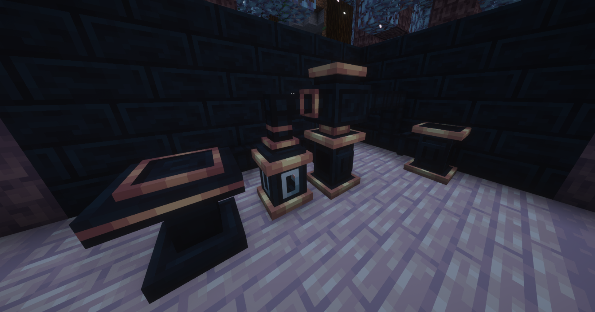
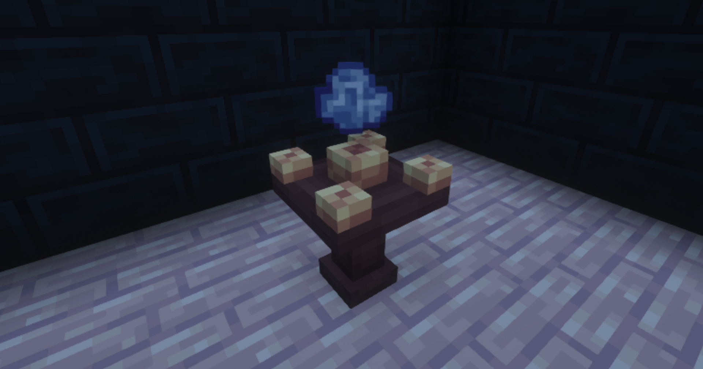

The “Wizards Reborn” mod is inspired by famous “Thaumcraft” mod, which has not been updated since 2018.
The “Wizards Reborn” mod is still under development as it is newly released and future updates will be released
Some of the mechanics are very similar to Thaumcraft’s since the creators are trying to recreate the mod without copying it
Alchemy is the engineering core of the mod, producing various materials, fluids, and crystals for later use. It relies on the Alchemy Workshop, with fluids and steam transported through pipes to power its processes.
The Alchemy Furnace is a powerful mechanism designed to convert water into steam while efficiently retaining heat for extended periods. In addition to its role in steam production, it can also function as a regular furnace, allowing players to melt down items and process various materials.
The Alchemy Machine is the main mechanism in alchemy, able to transform items and fluids using steam. The Boiler is needed to operate the Alchemy Machine. Installed from above, it may contain steam, Wissen, and the resulting fluid.
The Orbital Fluid Retainer features a powerful gravitational field, allowing it to securely hold and contain fluids with exceptional stability. As a vital component in alchemical processes, it ensures precise fluid management, preventing dispersion and maintaining a steady supply for various applications.
Mechanisms that automate and streamline your systems reduce manual effort and boost efficiency. They handle repetitive tasks, manage resource flow, and optimize processes, ensuring smooth operations. By taking over routine work, they free up time, allowing you to focus on more complex or creative tasks that drive progress and innovation.
Totems are powerful structures that provide various benefits and buffs. These include totems of Flames, Experience, Absorption, Disenchant, and Drought, used for protection, saving XP, or affecting the environment. Each totem offers unique advantages to enhance gameplay, from boosting defense to altering surroundings.
Trinkets are special items that grant various buffs, such as increased Wissen storage, enhanced damage, or reduced cooldowns. They can be found around the world or crafted.
Ancient crystals, buried deep underground, contain the primordial energy of 'Wissen.' This force transforms matter, shaping the world and unlocking alchemical breakthroughs.
Workbenches are essential for crafting and upgrading items using Wissen. They transform basic materials into powerful creations, enhancing your gear and advancing your progress.
The Arcane Workbench is an advanced Crafting Table with additional slots, allowing for more intricate and specialized crafting. It utilizes Wissen as a key resource to create powerful items, infuse magical properties, and enhance existing gear, making it essential for advanced crafting and alchemy.
The Wissen Crystallizer is a specialized mechanism capable of crystallizing Wissen, converting raw magical energy into a stable, tangible form. It is used to create crystals and other enchanted materials, which serve as essential components in advanced crafting, alchemy, and arcane rituals.
The Wissen Altar is capable of releasing primordial Wissen energy from Arcanum and Arcanum Dust. By tapping into the core of Wissen, it channels its raw magical power, making it essential for arcane rituals and alchemical processes. This altar is a vital tool for harnessing the purest form of Wissen energy.